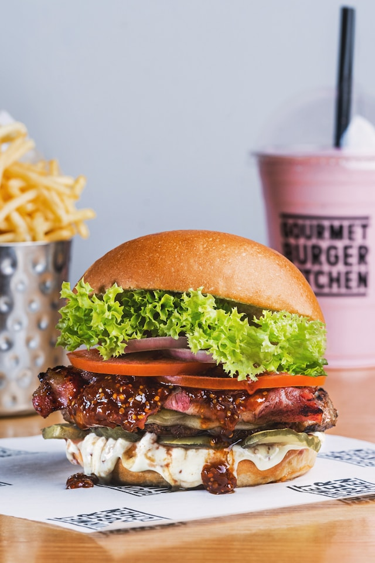

Home
Southwest Burgers

Photo by Eiliv Aceron on
Unsplash
Description
These zesty burgers are bursting with flavor. Taco seasoning, peppers, and pepperjack cheese give ground beef a boost.
Then the patties are served up on buns with sour cream and salsa. A fun twist on barbecued burgers!
Ingredients
- 2 pounds ground beef
- 1 (1.25 ounce) package taco seasoning mix
- ¼ cup chopped green bell pepper
- ½ cup chopped onion
- 4 slices pepperjack cheese
- 2 tablespoons salsa
- 2 tablespoons sour cream
- 6 hamburger buns
Steps
- Preheat grill for high heat.
- In a large bowl, mix together the ground beef, taco seasoning mix, bell pepper and onion using your hands. Form into 6 patties.
- Lightly oil the grill grate. Cook burger patties for 5 minutes per side, or until well done. Place buns cut side down onto the grill
to toast during the last minute or so. Top each burger with a slice of cheese before removing from the grill. Serve burgers on toasted buns topped with salsa and sour cream.